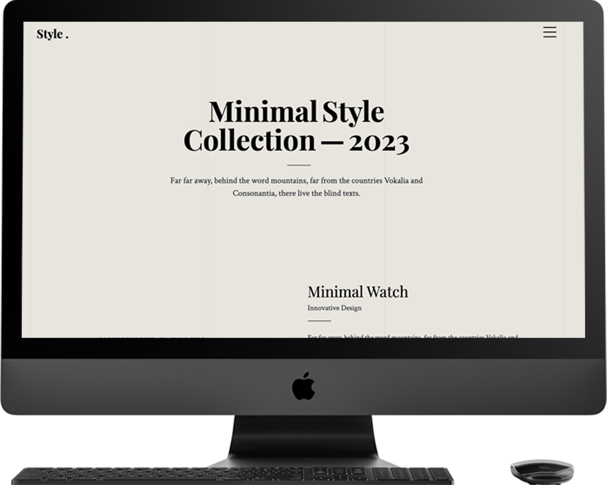

2022
PUBLISHER
2025
- web
- publisher
- kimkyoungjin
새로움을 찾아다니는
모험가 김경진 입니다.
About ME!
-
경력
2023.09.01 - 현재(주)포엔
S/W Biz팀 - 웹퍼블리싱 및 프론트엔드-
배터리 재제조 이력시스템
- - 재제조현황 대시보드 화면 구현
- - 화면 유지보수
- - 반응형 작업
-
배터리 진단 시스템
- - 기획 및 데모 사이트 디자인 퍼블리싱
- - 프로젝트 WBS 작성 및 업체 선정 및 조율 계약 연락
- - 현재 테스트 중. 2025년 하반기 배포 예정
- 데이터 분석 자동화 웹사이트 기획 및 UI 정의
- 사내 홈페이지 디자인 및 유지보수
-
배터리 재제조 이력시스템
-
자격증
- - GTQ 1급
- - 웹디자인자격증
-
교육
2022.01.01 - 2023.08.31라인컴퓨터 아카데미
UI/UX 퍼블리싱- - UI/UX디자인 및 구현
- - 포토샵, 일러스트, Adobe XD의 디자인 툴을 사용하여 레이아웃 디자인
- - 부트스트랩과 css 라이브러리 사용
- - git, github 이해 및 세팅
Project
RESPONSIVE WEBSITE [PC, MOB]
Minimal Goods
Gsap을 이용하여 만든 페이지입니다.
다채로운 애니메이션을 구현하였고 반응형으로 제작했습니다.
퍼블리싱 90% | 2인 제작
html
css
js

RESPONSIVE WEBSITE [PC, MOB]
SKINFOOD
스킨푸드 홈페이지 리디자인
총 5페이지 디자인, 퍼블리싱 진행했습니다.
디자인 100% | 퍼블리싱 100%
html
css
js
ADAPTIVE WEBSITE [PC]
Minimal Style
디자인 데모 사이트를 참고하여 퍼블리싱 했습니다.
gsap, jarallax 등 동적인 요소의 라이브러리를 사용했습니다.
퍼블리싱 100%
html
css
js

RESPONSIVE WEBSITE [PC, MOB]
1st PORTFOLIO
첫번째 저의 포트폴리오 입니다.
부트스트랩을 사용하여 반응형이 가능하도록 만들었습니다.
디자인 100% | 퍼블리싱 100%
html
css
js
RESPONSIVE WEBSITE [PC, MOB]
Movie Search Site
Vue3를 이용하여 만든 사이트로,
OMDB웹사이트 API를 가져와 영화정보 사이트를 만들었습니다.
Vue3 | clone coding
vue3
scss
js
Thank you for visiting my portfolio!
모든 문의는 환영입니다!